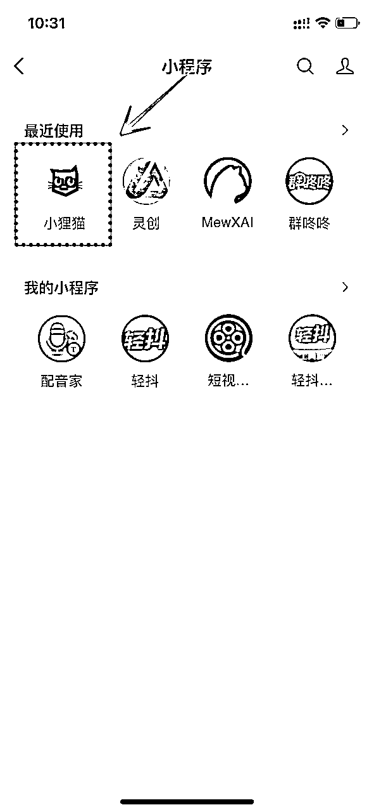
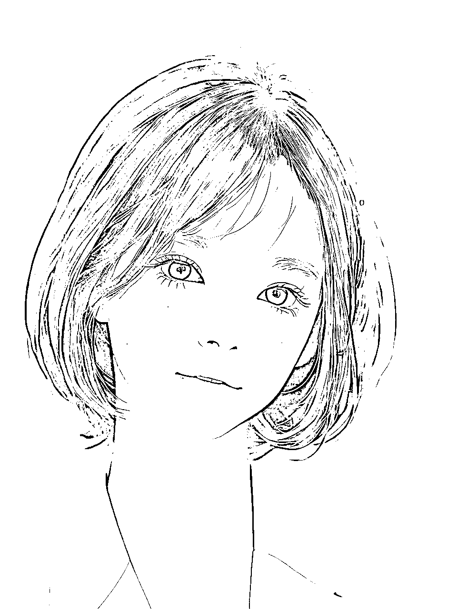
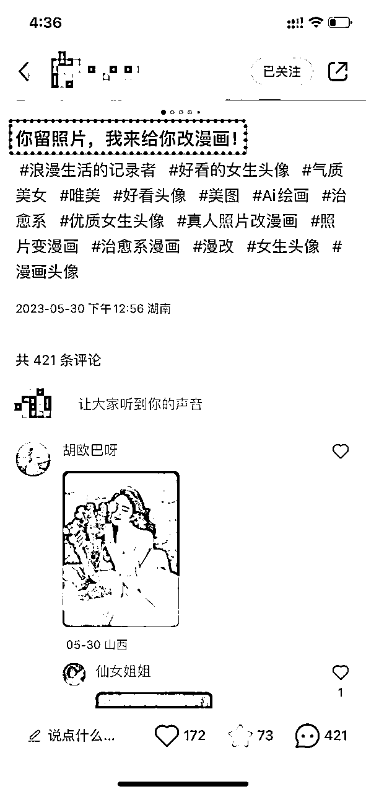
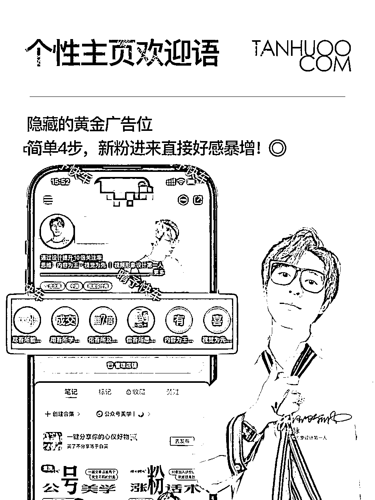

来源：https://h5m680d3pz.feishu.cn/docx/W9fMdeBxgoHuTkxuWhBctaFdnFe
今天给大家分享AI漫改头像最简单的玩法，低成本制作，普通小白可快速上手在小红书上精准引流宝妈粉，单号月利润1W+
这个项目的逻辑就是通过客户提供真人照片，用国内的小程序软件改成漫画的图，一单利润10-30元（可以设置套餐加，增加客单价），完全放大矩阵化操作，同时可以用这个玩法去收徒，一般在199-1000不等。
我团队的小伙伴单账号漫改照片收10-20元/单，每天作图纯利润在100+元，收徒在1-5个/天，客单价199，最高一天13个学员；月收益保底1-2W+，也有小姐妹的徒弟们收费499/980，价格大家可以自定义，收入没上限。
因为我们都是自己人，加上都是宝妈，所以不希望价格放太高，但这收费299/399/599完全没有问题，毕竟来钱快，变现也很OK，都可以回本的，重要的是后面来的人脉，值钱，不管是消费粉还是创业粉都能给你带来无限的价值
【时间仓促随便截了几个图，大家参考，实打实的数据】
因为收款太多，容易风控，支付宝还有一部分收益，时间关系就不一一截图啦
这个赛道可以长期玩，无论作为副业还是引流私域都非常香，后端变现的赛道可以无限拓展，滚雪球创造收益；
今天也是来到生财第一篇贡献文，写的比较详细，单纯的和大家分享好东西，交个朋友。讲到这里，顺带给大家做个自我介绍
我是晴予，也可以叫我恋大，互联网赛道摸爬打滚10年有余，多年靠电脑、手机创业；简单分享个人职业历程，希望以后可以结识更多优秀的你们
●2011-2018：京东天猫等公域平台电商中做生鲜等类目，全能岗位在职，除了美工，别的所有岗位都有我参与，俗称打杂的。
●2017年底，以科学喂养和育儿为出发点，开始经营宝宝辅食，2018年3月彻底离开职场生涯。从个人零售开始，采用精准引流和高效成交转化的方法，结合公域和私域，快速拓展了千人队伍，私域储备高质量宝妈消费粉和创业粉10000+
●2020年到2022年期间，带团队转战云货优选品牌特卖，社群裂变团队几万人，收获财富和一帮粘性队伍。
●当品牌团购多平台竞争，行业开始卷起来，团队小伙伴的业绩开始下滑。在2021年下旬，我开始带领部分店长进军知识付费赛道，主攻全媒体领域，同时也更注重个人成长，团队佛系发展。
●我们从闲鱼无货源电商、抖音带货、视频号带货、小说推文、小红书店铺等等都玩
●今年主要带团队做0投资有后端持续性收益的赛道【带团队长建立管道】，这个漫改也是我们流量之一
平时没多少爱好，喜欢研究一些简单的蓝海小项目，分享给这些跟随多年的团队宝妈们去拓展流量，去增加副业收入
废话不多说啦，下面直奔主题
1、准备一个未注册过小红书的手机号+一部手机（推荐苹果7以上）
不建议使用老号，如果之前有注册过账号有过违规，并且是安卓手机需要刷机，改串，找手机店去解决，大概30-100费用，不同城市不同价格
如果是苹果手机，电脑下载爱思助手，链接数据线，刷机，（没有违规的账号还原系统就行，刷机更保险）
温馨提示：再次注册不要直接用微信或者微博等号登录，直接用一个未违规的手机号
注销后再次注册，可以等个2-3天再去注册
2、注册的网络要求
一定要是4g/5g流量，不用wif，注册成功后，不要更改昵称，只设置性别，年龄，选择和自己相关的行业信息（手绘、壁纸、头像这类型等）关注一下，其他信息不要动，养号成功以后在去改。
1、注册成功后，刷推荐页，去养号，整个动作30-40分左右，就是模拟正常人的一个使用动作，一些头像，AI图，手绘，壁纸，绘画类型的你都看看，随便溜达，然后也在同城入口点开看看
2、第二天你可以直接搜索“AI漫改头像”“漫改照片”去精准的搜索，精准刷这类型的笔记，同时去看看当下热门的作品，关注做的好的同行，给她们点赞，评论，转发，这样的动作，重复个5-10个以上的作品，不要都只在一个博主页面看
在刷的过程，其它的标签和你选择的兴趣标签内容按照5:1的比例来刷推荐内容，让你系统判断你是个正常的用户，适当点点赞，关注收藏并评论，大约进行40分钟左右的养号刷对标操作
点赞，关注2-3位3000粉以上的对标账号，浏览笔记要求：速度不要太快，最好能够看完包括图片、文字、视频在内的所有内容，起码是一半以上的内容，停留1-2分钟
在刷对标的过程中，关注的博主有三个作用
1）提高我们账号的垂直度
2）后面我们可以抄她们的爆款笔记、借鉴文案、借鉴图、正文、标题
3）多看、多思考优质账号是怎么运营的
在小红书上也可以在购物的入口，或者你刷的过程中，看到有挂车推广产品的，你买个几块钱用得着的，这样也可以提升你账号的权重
3、延续第二天养号的操作，正常点赞关注，看看推荐页（发现页面）的里的视频里面有没有推荐给你符合你赛道的漫改照片，如果有，也可以对推荐的进行正常的点赞与关注、评论，转发等操作。
前三天每天养号在1小时以上更加，你可以每天玩2次，自己去把控这个时间段
每天去⼩红书平台上浏览互动，把我们的账号活跃度提升起来，让平台认为是 ⼀个活跃的账号，给的流量会更多⼀些。
头像：你自己漫改一个头像就可以，看着好看的，比如你是做宝宝的，就宝宝的头像，萌娃的头像
昵称：你自己孩子昵称，你的昵称，或者XX画师，XX漫改都行
签名1：
专注私人定制漫改头像、壁纸；
私信取图，礼貌拿图，拿图的宝宝一定要关注点赞收藏哦，谢谢宝子们；
AI绘图，靠本事吃饭，关注不迷路，做我粉丝我宠你呀；
签名2：
I绘画，漫改头像约稿
每日分享好看的头像壁纸
求高清原图的宝子进裙裙公告
🉑自用，🈲商用，需要约稿改🉑私
签名大家自己参考，改改，找10个对比号，你自己就都会了，同行就是最好的老师
这里注意了，不要留任何联系方式，包括微信号，公众号，微博号，邮箱，链接等，有人找你，也不要直接发微信等联系方式给对方，用最安全的方式去引流，后面课程会讲到
取昵称的时候要谨慎，七天只能改一次，除了品牌号，其它的账号不要带品牌名，或者其它的一些营销词汇，也不能直接写微信号或者其它推广的名称，这种账号活不长久，会限流
所以小红书的号，你也不要去动，有的学员可能有点小心思，我把小红书号直接改成自己微信号，这种是切记的哈，绝对会牺牲
年龄：你写个小点的，选择20岁左右即可，25以下吧，年轻点
1、准备要用到的软件及小程序
小狸猫：图片转漫画的AI工具
美图秀秀：裁剪照片尺寸修图美化等
剪映：图做成视频+音频
用微信扫码去注册就可以，小狸猫：这个主要是微信小程序，也比较方便，每天每个微信上都会有免费次数，你一开始也可以不用充值会员，直接完成任务就能够用，实在不够多个微信操作也行
小狸猫AI绘画是我对比很多APP及小程序中筛选的，也是目前市面上普通人用的最多的一款，并非MJ和SD模型绘画，基本上有参考原图，再去加文字描述就可以一两分钟出图，超级简单

如果你爆粉需求量特别大，几个微信都不够你用，那你一个月花19.9买个会员也行，能爆说明你这个钱也足够赚很多倍回来了
大概玩法是这样，我还有很多类似小程序，软件都有在玩，反正每个做出来的效果图肯定有所差异，这种小狸猫就比较适合普通人，大众化当下去玩，能快速变现
做AI漫改的核心就是词组，把你的词组准备好，需要改成的基础选项设置好，直接能一键出图
2、美图秀秀
一般是裁剪照片的尺寸，客户给到你的图，第一时间要拿来裁剪，因为肉眼你没法去确定尺寸，如果不匹配的尺寸，到时候做出来是变现的图，这样你也浪费了一个猫豆
3、剪映：一般是用于图片做成视频，加上BGM一些适合的音乐等
4、Wink：主要修复照片清晰度，也可以去对一个人的照片做精修，五官发质，眼部，面部等等做调整，如果一个粉丝的要求非常的高，你用到这个软件给对方去精调也是可以，这样收费也可以贵点，30起步定价
5、醒图：主要调节照片的色彩，也可以给修图美颜，醒图，Wink，美图秀秀，美颜相机，都有差不多功能，只是醒图色彩调的更好看，美颜的话，可以直接图片化妆我是推荐美颜相机，这个自己去随便调着玩。
下面我给大家一些组合好的基础词汇，你们后期自己去调整修改
【一个漂亮可爱的小女孩，最高画质，精美画面，丁达尔效应，大眼睛，长睫毛，身穿白色西装，棕色中短发，完美五官，清晰脸庞，精致嘴唇，精致眼睛，甜美笑容，干净唯美的背景，温柔的光线，现代，逼真，人像居中】
这个是纯文字出图，没有参考图

【母子，母亲头戴花帽子 怀抱婴儿，五官精致，皮肤白皙，瓜子脸，化妆，大眼睛，微笑，棕色长发微卷，背景是一片花海，锁骨，完整壁纸高清】
【一个漂亮可爱的小女孩，最高画质，精美画面，丁达尔效应，大眼睛，长睫毛，身穿白色体恤，棕色中短发，完美五官，清晰脸庞，精致嘴唇，精致眼睛，微笑，干净唯美的背景，温柔的光线，现代，逼真
和参考图相似度100，不改变服装和发型】
这个呢，大家自己去实操，可以自己写文案，出图，也可以用参考图配差不多的文案，给客户做出来需要的漫改头像
上面是笔记的一些基础运营知识，大家学以致用
我们做漫改这个，图是原创，文案不需要太多，就可以很快拉动评论区，所以爆起来非常快

你留照片我来给你改漫画
想看看漫画中的你长什么样子吗
想知道自己宝宝在漫画中长什么样子吗，你留图我来改
你发照片我来做，留下照片再走呀
做我的粉我宠你呀，你留照片我来改
以上等等标题＋话题就可以，不仅仅是这些，还能去做一些情感文案，壁纸，等等图的制作，同行是最好的老师，多研究多参考
一般发布完作品，评论区最好做个说明，参考以下文案：
我很宠粉的哦，需要做漫画的留图评论区哈，做好需要给我展示不能删除，另外，优先做单人照片清晰，正面照，尽量不带手的照片效果最佳哈!
话题这个，大家不想打字直接拿去用，自己去增加修改
用你的照片改漫画
#美女头像 #女生头像 #少女头像 #手绘头像约稿 #手绘头像 #漫改 #优质头像 #手绘头像 #真人照片改漫画 #照片变漫画 #漫画 #漫画头像 #原创漫画 #头像约稿 #头像分享
发布作品入口
创作中心入口去发，还有小红书给你奖励的流量，从奖励笔记入口发作品，这个都是非常基础很简单的，就不去做录屏讲了
大家都知道公域引流到私域，是最香的，目前趋势来说，私域的人脉最值钱
对于普通人来说，公域上面的项目，赛道再香，看着别人很赚钱的样子，但是实际上你去做了拿结果也并非那么容易
所以，今天的课程，主要分享公域转私域变现的细节流程，如何减少、规避平台违规导致的限流，封号等问题
1、发布瞬间
发布瞬间留联系方式，主要是当你的账号不能私信，不能发言，被禁言时候，着急的粉丝是可以看到你的主业联系方式去找到你
目前这种也会有部分违规的情况，不可避免，没人举报是问题不大，一般没得问题，举报了大不了整改，这个号不行再多做几个号

像有的粉丝真的很笨又粗心，就没看到你的签名，让进群聊，所以你这可以在瞬间添加一些字，引导，也可以设置吸晴的字眼，看着高大上
但是注意，一些容易违规的词，就尽量谐音
2、笔记置顶引导说明
声明一下，只给我的粉丝宝宝免费漫改，评论区留图我会挑一些来做，做好需要给我展示不能删除，另外，优先做单人照片清晰的正面照片，尽量提供不露手的照片!
由于时间的关系，不能一一给粉丝宝宝做完，着急的宝子不用排队，可付米私我
白菜价约稿哦~
这个文字你们复制到稿定设计，微脉水印相机都可以做，先新建一个3：4的图，再加文字，自己调整文字大小，实在不会弄的就手机上面的记事本做，这个太简单所以不做教程
发布的时候加上话题，什么是话题就是#＋对应的关键词，这个是有热度的，话题里你这个如果能被推有排名会持续性给你流量
三：大号收藏小号笔记，联系方式留在小号上面，目前来说最安全的一种方式，封也是封小号
4、建群引流
建群引流相对来说比较安全，大号建群，小号在群里发言，建议最好安排两个小号在群里，岔开时间互动
群昵称为何重要，因为群昵称也是一个引导作用
无论粉丝在群聊广场还是在这个刷笔记时候看到，都有机会看到你的进群提醒
建群后，群公告你们自己写，参考以下这个：[群公告]
感谢大家的支持和喜欢
做头像的宝子可以评论区留图等我翻牌~
由于时间的关系，不能每个人都做，但是我会尽量抽空来多做一些送给大家，着急的宝子可以后台思我约稿~不排队的情况下，一个小时左右出图
如果着急的宝宝，可以白菜价约稿哦
群里的我的粉丝宝，前十名发照片给我做漫改，做过了的宝子就不要发了哈[飞吻R] 优先做单人照片清晰正面照，尽量不带手的照片效果最佳哈！不按照要求发照片的，那我就忽略了哦～
后面这句话可以主号，也可以小号助理号去发，小助理号不要设置群管理，要不到时候两个号都阵亡
如果是发你微信，联系方式，可以手写一个微信号，直接拍图发群.每发10次就要换一个图，或者手机上电子版的写微信号
同样的话术，反复超过10次容易频繁，被系统检测你引流
这里我就不做细节指引了，大家灵活来，平台规则时刻在变，引流的方法也是很多，这里就讲最简单又快速稍微安全点的方法
如果看到这里还有不清楚的，再交流，祝大家私域流量爆满，收💰手软